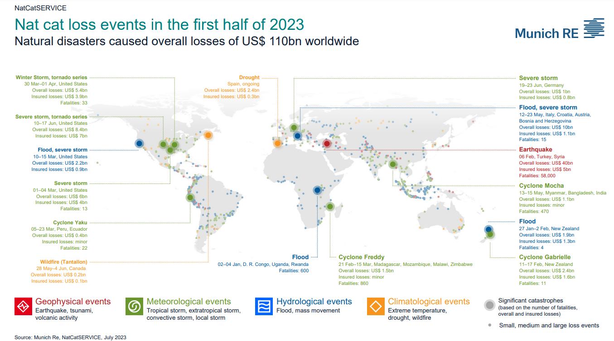

The Insurance Market
A summary of resources and information I used to learn about the industry
What is insurance and reinsurance?
Insurance is a legal agreement between an insurer and an insured in which the former guarantees to defend the latter in the event of damage or death. Reinsurance is the insurance a firm purchase to lessen severe losses when it decides not to absorb the entire loss risk and instead shares it with another insurer.
Lloyds London
Lloyds London is the wolds leading marketplace for specialist insurance. It is globally known for insuring the most complex and specialist risks. It is a subscription market, meaning risk is shared amongst several syndicates or insurers, which helps to make sure market prices remain stable if losses were to occur across the board, and also helps to maintain the solvency of individual companies if big payouts and losses were to occur.
Key Industry Events
- The current growing cyber industry. It is particularly topical given it is identified as one of the biggest risks facing the financial system, and the demand for insurance against it is growing. However, methods to assess this risk are at their infancy and in consequence the management of cyber risk against risk appetite is not an easy job to carry out. For more, see this report by pwc
- Thailand Floods 2011. See this report by Verisk , or by Guy Capenter . This event changed the thinking around the fragility of global supply chains to natural disasters
A Summary of 2023 Events
For further information on natural disasters have recently occured, visit this website